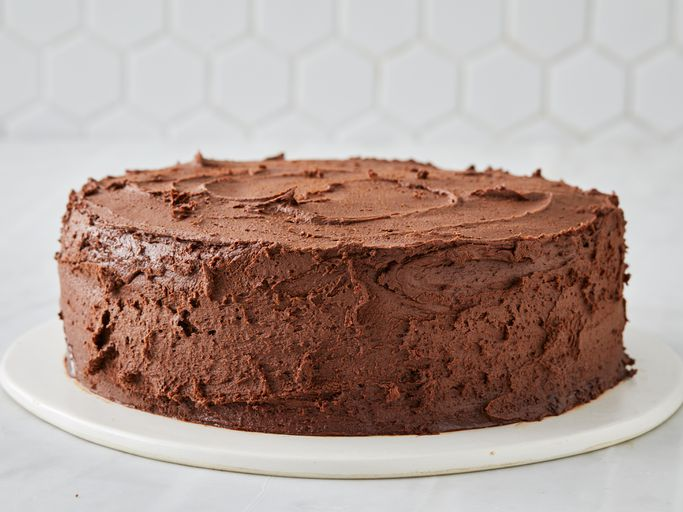

Hershey's Chocolate Cake

Description
Rich, moist, and frosted to perfection, this Hershey’s Chocolate Cake is a classic dessert made with deep cocoa flavor and creamy chocolate frosting—simple, rustic, and utterly irresistible.
Ingredients
- 1 and 3/4 cups all-purpose flour
- 3/4 cup unsweetened cocoa powder
- 2 cups granulated sugar
- 1 and 1/2 teaspoons baking powder
- 1 and 1/2 teaspoons baking soda
- 1 teaspoon salt
- 2 large eggs
- 1 cup whole milk
- 1/2 cup vegetable oil
- 2 teaspoons vanilla extract
- 1 cup boiling water
- Chocolate frosting (store-bought or homemade)
Directions
- Preheat the oven to 350°F (175°C). Grease and flour two 9-inch round cake pans.
- In a large bowl, sift together the flour, cocoa powder, sugar, baking powder, baking soda, and salt.
- Add the eggs, milk, oil, and vanilla extract. Beat on medium speed for 2 minutes until well combined.
- Stir in the boiling water (the batter will be thin).
- Pour the batter evenly into the prepared cake pans.
- Bake for 30-35 minutes or until a toothpick inserted in the center comes out clean.
- Cool the cakes in the pans for 10 minutes, then remove from pans and cool completely on wire racks.
- Once cooled, frost with chocolate frosting and decorate as desired.
- Serve with fresh berries or whipped cream if desired.
- Enjoy your delicious Hershey's Chocolate Cake!
Back to Home